In this document, we demonstrate how to solve a 2D Poisson problem using existing objects from the oomph-lib library:
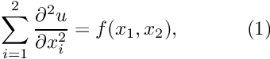 in the rectangular domain 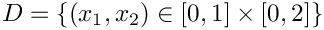, with Dirichlet boundary conditions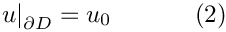 where the function is given. is given. |
We provide a detailed discussion of the driver code two_d_poisson.cc which solves the problem for
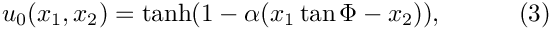
and
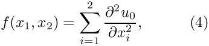
so that 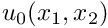 represents the exact solution of the problem. For large values of  the solution approaches a step function
the solution approaches a step function
![\[ u_{step}(x_1,x_2) = \left\{ \begin{array}{rl} -1 & \mbox {for $x_2 < x_1 \ \tan\Phi$} \\ 1 & \mbox {for $x_2 > x_1 \ \tan\Phi$} \end{array} \right. \]](form_8.png)
which presents a serious challenge for any numerical method. The figure below compares the numerical and exact solutions for  and 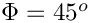.
and 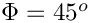.

Global parameters and functions
Following our usual practice, we use a namespace, TanhSolnForPoisson, to define the source function (4) and the exact solution (3). Both functions permit arbitrary values of the tangent 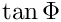 and the steepness parameter , which are stored in TanhSolnForPoisson::TanPhi and TanhSolnForPoisson::Alpha, respectively, so that the "user" can set their values from the driver code.
The driver code
In order to solve the 2D Poisson problem using oomph-lib, we represent the mathematical problem defined by equations (1) and (2) in a specific Problem object, PoissonProblem. oomph-lib provides a variety of 2D Poisson elements (e.g. 2D quadrilateral elements with bi-linear, bi-quadratic and bi-cubic representations for the unknown function) and we pass the specific element type as a template parameter to the Problem. In the driver code, listed below, we use the QPoissonElement<2,3>, a nine-node (bi-quadratic) 2D Poisson element.
The next few lines of the main() function create a DocInfo object – an oomph-lib object that collates various items of data that can be used to label output files: Here we specify that the output files are to be written to the directory "RESLT", and that the first batch of output files should be labelled with the identifier "0". See the discussion of the postprocessing routine doc_solution(...) for details. [Note: While the ability to specify an output directory from the driver code is useful, it does rely on the "user" having created the directory before the code is executed. We could use the C++ system(...) function to issue a system command which creates the directory if it does not exist. Since this would make the code non-portable, we only issue a warning suggesting the likely cause of the problem if the output file cannot be opened. If you want to make absolutely sure that the output directory does exist and can be written to, you can change this forgiving behaviour with the function DocInfo::directory_must_exist(). This function provides access to a boolean flag which is set to false by default. If set to true, the code execution terminates with assert(false) if the directory specified with DocInfo::set_directory(...) cannot be written to.]
Next we execute the Problem::self_test() function to check whether the Problem has been correctly initialised. If this test is passed, we proceed to the solution. We choose the angle of the "step" as 45 degrees (corresponding to 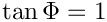) and then solve the problem for a number of values of the steepness parameter 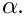 We document each solution with the post-processing routine doc_solution(...) which accesses the step number and the output directory via the DocInfo object.
The problem class
The PoissonProblem is derived from oomph-lib's generic Problem class and the specific element type is specified as a template parameter to make it easy for the "user" to change the element type from the driver code.
The problem class has five member functions, only three of which are non-trivial:
- the constructor
PoissonProblem(...) - the function
actions_before_newton_solve() - the function
doc_solution(...)
The function Problem::actions_after_newton_solve() is a pure virtual member function of the Problem base class and must be provided. However, it is not required in the present problem and we leave it empty. Similarly, the problem destructor can remain empty as all memory de-allocation is handled in the destructor of the Problem base class. The Problem only stores one private data member, the pointer to the source function.
[See the discussion of the 1D Poisson problem for a more detailed discussion of the function type PoissonEquations<2>::PoissonSourceFctPt.]
The Problem constructor
In the Problem constructor, we start by discretising the rectangular domain, using oomph-lib's SimpleRectangularQuadMesh object. The arguments of this object's constructor are the number of elements (whose type is specified by the template parameter), and the domain lengths in the  and
and  directions, respectively.
directions, respectively.
The subsequent lines of code pin the nodal values along the entire domain boundary. In the 1D example considered earlier, the identification of the nodes on the domain boundaries was trivial. In higher-dimensional problems, this task can become rather involved. oomph-lib's Mesh base class provides the helper function Mesh::boundary_node_pt(...) giving (pointer-based) access to nodes on specified mesh boundaries. [The total number of boundaries can be obtained from Mesh::nboundary(), while the number of nodes on a specific boundary is available from Mesh::nboundary_node(...).] The nested loops over the mesh boundaries and the nodes on these boundaries therefore provide a convenient and completely generic method of accessing all boundary nodes.
Finally we loop over all elements to assign the source function pointer, and then call the generic Problem::assign_eqn_numbers() routine to set up the equation numbers.
"Actions before solve"
We use Problem::actions_before_newton_solve() to update the boundary conditions in response to possible changes in the problem parameters. We use the exact solution, specified in TanhSolnForPoisson::get_exact_u(...), to determine the boundary values that are appropriate for the current values of and .
[See the discussion of the
1D Poisson problem for a more detailed discussion of the pure virtual functions Problem::actions_before_newton_solve() and Problem::actions_after_newton_solve().]
Post-processing
The function doc_solution(...) writes the FE solution and the corresponding exact solution, defined in TanhSolnForPoisson::get_exact_u(...) to disk. The DocInfo object specifies the output directory and the label for the file names. [See the discussion of the
1D Poisson problem for a more detailed discussion of the generic Mesh member functions Mesh::output(...), Mesh::output_fct(...) and Mesh::compute_error(...)].
Comments and exercises
- In its current form, the number of elements and the dimensions of the domain are hard-coded in the
Problemconstructor. Change theProblemconstructor so that these quantities become input parameters that can be set from themain()function. - Note how the accuracy of the FE solution decreases as the steepness of the "step" is increased: How many elements are required to resolve the solution with 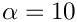 as accurately as in the case of 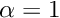? [Note: Since the solution has steep gradients only in a very narrow region, uniform mesh refinement is an extremely wasteful method of improving the accuracy of the computed solution.
 Plot of the solution for different values of the steepness parameter
Plot of the solution for different values of the steepness parameteroomph-libprovides powerful mesh adaptation routines which perform fully-automatic mesh refinement and unrefinement, based on a posteriori error estimates of the solution. We will demonstrate these in another example.] - Repeat the numerical experiments with different element types. Replace the nine-node Poisson element,
QPoissonElement<2,3>, by its lower- and higher-order counterpartsQPoissonElement<2,2>andQPoissonElement<2,4>, respectively. Compare the total number of degrees of freedom, the errors, and the run-times for the different discretisations.
Header files and precompiled meshes
We have repeatedly stressed that oomph-lib Mesh objects are (and any user-written ones should be) templated by the element type, so that meshes can be used with all finite elements that are derived from the same geometric element (2D quad elements from the QElement family, say). Typically, the element type is specified in the driver code. Consequently, the compiler must instantiate the Mesh object for a particular element type when the driver code is compiled – there is no point in trying to "pre-compile" a Mesh object for "all possible element types". The source code for Mesh objects is therefore usually contained in a single (header) file which must be included in the driver code. The first few lines of the driver code two_d_poisson.cc illustrate the technique:
The code uses objects from the generic and poisson libraries whose function prototypes are contained in the header files generic.h and poisson.h, located in the oomph-lib include directory. All objects in these libraries are fully instantiated and no re-compilation is required – we simply link against the libraries which are located in oomph-lib's lib directory. The mesh header files (which include the entire source code for each mesh) are located in the include (sub-)directory include/meshes, and are included into the driver code with a C++ include directive
While this strategy greatly facilitates code reuse, it can incur significant compile-time overheads as the (possibly very lengthy) mesh sources must be recompiled whenever the driver code is changed. During code development, this overhead can become unacceptable. To avoid the constant re-compilation of the mesh sources, all oomph-lib mesh objects are contained in two separate source files. In the case of the SimpleRectangularMesh, the class definition and function prototypes are contained in the small auxiliary header file simple_rectangular_quadmesh.template.h, while the actual function definitions are contained in simple_rectangular_quadmesh.template.cc. These are the only sources that the mesh-writer has to provide. The header file simple_rectangular_quadmesh.h is generated (automatically) by concatenating the two *.template.* files and all three files are contained in the mesh include directory. This allows the "user" to pre-compile the mesh for a specific element type (or for a range of specific elements) to produce a separate object file that can be linked against when the driver code is built.
The procedure is illustrated in the alternative source code
two_d_poisson2.cc and the associated mesh file, two_d_poisson2_mesh.cc. In the original version of the code, two_d_poisson.cc, the mesh was instantiated with the element type QPoissonElement<2,3> and we will assume that this is the only element type required in the driver code. We force the instantiation of the SimpleRectangularQuadMesh for this element type by employing the C++ "template" statement in the mesh file, two_d_poisson2_mesh.cc, which is listed in its entirety here:
This source file can be pre-compiled into an object file, two_d_poisson2_mesh.o, say.
The driver code only needs to include the templated header file (which contains the class definition and the function prototypes) so that the first few lines of the modified driver code look like this:
The driver code can now be compiled separately (without having to recompile the mesh sources every time) and the correctly instantiated version of the SimpleRectangularQuadMesh can be made available by including two_d_poisson2_mesh.o during the linking phase.
How to choose the linear solver for the Newton method
oomph-lib treats all problems as nonlinear problems and provides steady (and unsteady) Newton solvers to solve the system of nonlinear algebraic equations that arise from the spatial (and temporal) discretisation of the governing equations. Typically, the repeated assembly of the Jacobian matrix and the solution of the linear systems during the Newton iteration provides the major part of the computational work. Within this framework linear problems are simply special cases of nonlinear problems for which the Newton method converges in one iteration. The assembly of the Jacobian matrix and the solution of the linear system is performed by oomph-lib's LinearSolver objects. These typically provide interfaces to general purpose linear solvers such as SuperLUSolver (our default solver). The list of solvers includes:
SuperLUSolver:An interface to Demmel, Eistenstat, Gilbert, Li & Liu's serial SuperLU solver. See http://crd.lbl.gov/~xiaoye/SuperLU/ for details.HSL_MA42:An interface to the MA42 frontal solver from the HSL library. See http://www.hsl.rl.ac.uk for details.FD_LU:An extremely inefficient solver which computes the Jacobian matrix by finite differencing and stores it in a dense matrix. This solver is mainly provided to facilitate sanity checks during code development. (The residuals are easier to compute than the the Jacobian matrix!)- ...and many others. See the Linear Solvers Tutorial for a more detailed discussion of
oomph-lib'svarious direct and iterative solvers.
By default the oomph-lib Newton solvers use SuperLU with compressed row storage for the Jacobian matrix as the linear solver. To change the linear solver to another type you can over-write the Problem's pointer to its linear solver. For instance, to change the linear solver to HSL_MA42, add the following lines to the Problem constructor:
HSL_MA42 can document various statistics such the memory usage etc. This is enabled with the second command. Other solvers have similar member functions. See the full documentation of all oomph-lib classes for details.
We provide an example code two_d_poisson_compare_solvers.cc which can be used to explore the performance of various linear solvers for the 2D Poisson problem considered above.
Source files for this tutorial
- The source files for this tutorial are located in the directory:
demo_drivers/poisson/two_d_poisson/ - The driver code is:
demo_drivers/poisson/two_d_poisson/two_d_poisson.cc
PDF file
A pdf version of this document is available.